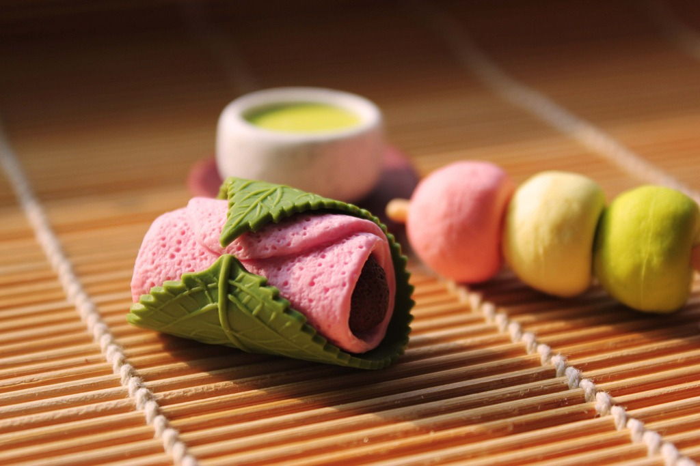
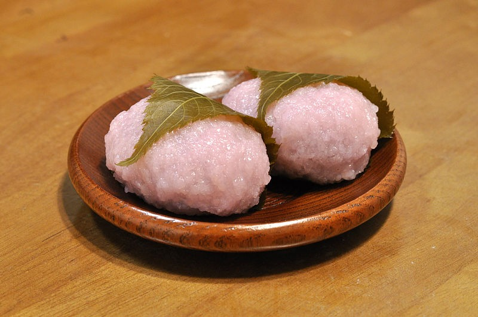
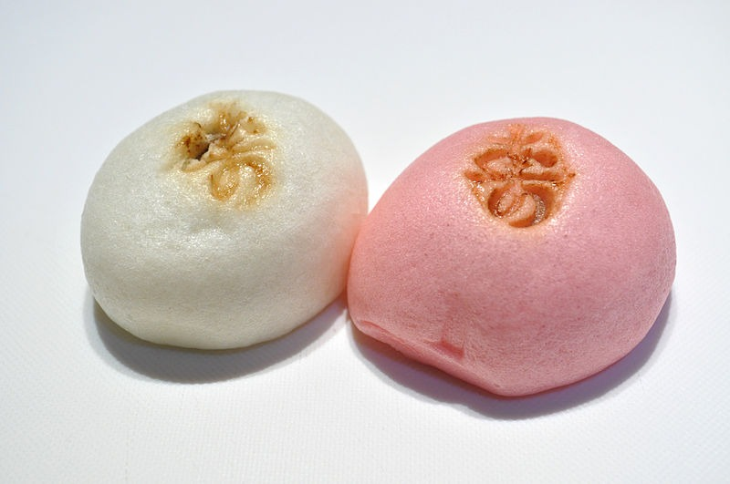
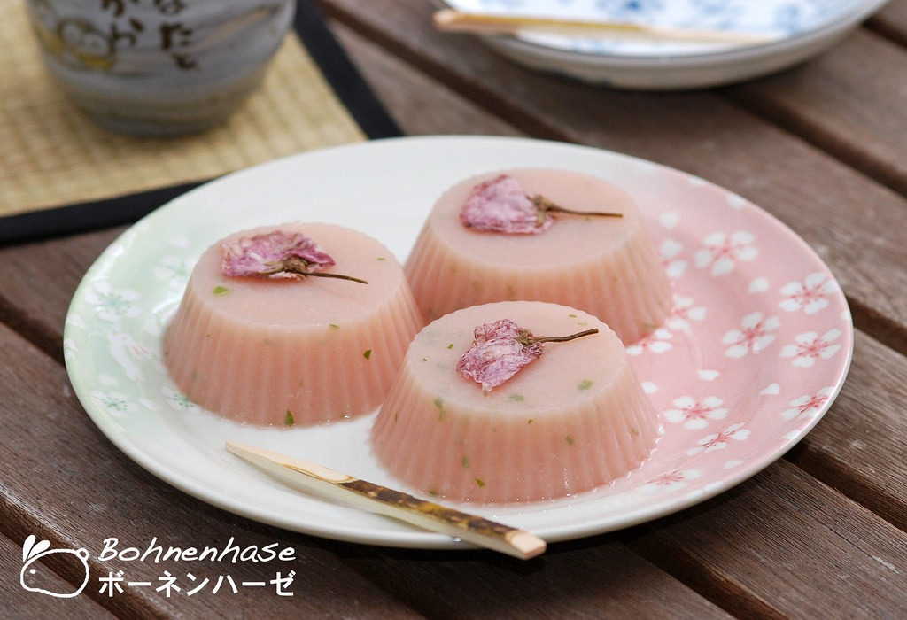
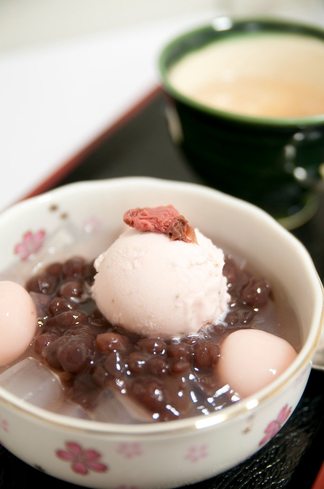

桜の食べ物と飲み物:日本のもち麺など
日本の国花である桜は、文化の象徴であるだけでなく、料理にも巧みに使用され、独特の風味を生み出し、伝統的な日本の食べ物や飲み物の魅力を高めています。これまでに桜について聞いたことも味わったこともない方は、この美しい春の花から作られた最も有名な桜の食べ物や飲み物をいくつか見つけてみましょう。

Image by crayonmonkey
under CC BY-SA 2.0
料理や飲み物として使用する前に、桜はまず「塩漬け」になります。この段階では、花が一年を通じて本来の色と風味を保ちながら、花を保存するのに役立ちます。
桜の花が7割咲き、茎が残っている状態で花の色を保つために、白杏酢または杏汁に漬けます。その後、塩を洗い、水気を切り、3 〜 4 週間熟成させます。次に、乾燥させた花を保存します。この時点で、花はおいしい桜料理を作るのに適しています。
桜餅

Image by Ocdp
under CC0 1.0
桜の食べ物はベタベタしていますが、食器がなければ葉のおかげで食べやすいです。
「桜」という言葉を聞くと、日本人は春、花見、そして当然のことながら桜餅を思い浮かべます。
桜の季節に欠かせない最も人気のある伝統的な和菓子は、桜餅です。通常の白いお餅ではなく、ピンク色のあんこが入ったもちもちなお餅です。最後に、塩味のある桜の葉で覆います。
桜のフードには 2 種類があります。関東でよく知られる「長命寺餅」は、小麦粉を水でこねて薄く延ばして焼いたものです。
道明寺餅もあります。米粉で作られた関西風の餅です。実際には、もち米を乾燥させて蒸して搗いたものです。小さなボールを作り、蒸します。
さらに、お好みで、外側の桜の葉は、お餅の乾燥を防ぎ、香りを付けるために使用されます。気に入らない場合は、手がべたつくのを防ぎるためにラップに包む人もいます。 桜餅の独特の甘じょっぱい風味ともちもち滑らかな生地は、日本人にとって最高の楽しみです。お花見の美しさを眺めながら、桜餅を食べるのは本当に楽しいものです。
さくら饅頭

Image by Ocdp
under CC0 1.0
桜饅頭はもち米粉と小豆餡で作られています。桜の塩の表面は、通常のお団子とは違います。尚、八重桜だけが団子に使用されるわけではありません。
塩漬けした後も、桜の色と風味が残り、団子がより魅力的になります。小さな丸い形のお餅は、おやつやデザートに最適です。
桜羊羹

Image by Mokiko
under CC BY-NC-ND 2.0
羊羹は、1191 年に中国から日本に伝わった伝統的な和菓子です。小豆餡、ゼリー、砂糖が通常、羊羹のゼリー状の塊を構成します。
桜ようかんは、寒天粉(ゼリーの一種)、砂糖、桜あんで作られています。桜羊羹には決まった装飾がないため、作り手の美学によってさまざまな形が生まれます。
通常、羊羹屋はこの桜料理を塩漬けした乾燥した桜の花で飾ります。羊羹の種類によって、さまざまな花模様を施すことができます。
このユニークなゼリーは、暑い夏にもぴったりです。春に桜が咲く頃にぜひ味わってください!
桜あんみつ

Image by Yuichi Sakuraba
under CC BY-NC 2.0
あんみつは、明治時代に起源を持つ日本のデザートで、小さなゼリーを餅、抹茶アイスクリーム、あんこ、シロップ、季節のフルーツなどの材料と組み合わせて作ります。この桜料理は、暑い夏にぴったりです。
日本人は、桜と伝統的なあんみつを組み合わせ、残りの材料は同じにしながら、純粋な桜と塩漬けの桜で作ったアイスクリームを組み合わせて、抹茶アイスクリームの代わりに桜あんみつを作りました。
小豆の甘みと桜アイスのまろやかな味わいが絶妙に調和しているため、お子様から大人まで、すべての人が楽しめると思います。このおいしいデザートは、桜の季節に日本の多くのレストランで提供されています。
さくら冷麺
花見の下で一日お酒を飲んだ後は、日本の冷麺がぴったりです。製菓材料としてだけでなく、桜の花びらを粉末にし、シソ粉と混ぜ、米粉と練り合わせた冷麺です。
冷麺は、日本人が大好きな有名な冷やし麺です。
特に夏の間。この種の麺は、つゆと一緒に食べることが多い。
つゆには、醤油、みりん、日本酒、昆布、鰹節が含まれます。
桜冷麺もこのソースで作られています。麺からほのかに桜の香りが漂い、清涼感があり、暑い日の涼しげな一品にぴったりです。
さくらおにぎり
桜のおにぎりは、お花見のピクニックで人気があります。桜の花の塩漬けは、ご飯が炊かれると塩味が強くなります。桜の香りとピンク色のおにぎりです。
プラスチック製の型を使用して、米を伝統的な三角形や丸いボールなど、さまざまな楽しい形に成形できます。
桜の季節はピンクをテーマにしているため、白いご飯にピンクの花びらを飾るのが理想的です。